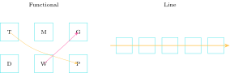

Definition
Layout: physical arrangement of human, technological and capital resources, aiming at "harmony" across the process. Evaluation criteria: safe operations, flow length, respect for staff, clarity, accessibility, use of space, flexibility, customer service. McDonald's layout evolved: indoor seating (1950s), drive-through (1970s), breakfast (1980s), play areas (late 1980s), kitchen redesign (1990s), self-service kiosks (2004), separate dining areas.
Model
| Layout | Idea | Fits | Pros / cons |
|---|---|---|---|
| Fixed position | product stays, resources come to | proj. | flexible, varied; |
| it (motorways, shipyards) | very high unit cost, | ||
| hard to schedule | |||
| Functional | similar resources grouped; | jobs, | flexible; long |
| products follow different routes | batch | flows, WIP, queues | |
| Cellular | resources for a product/customer | batch | productive, teamwork |
| family grouped in a cell | less flexible, lower | ||
| utilization | |||
| Line (product) | all products follow the same | mass, | low unit cost; not |
| sequence of resources | contin. | robust to stoppages |
Fixed position: give space to contractors to minimize transport. Functional: in production, can accumulate work in progress and queues (e.g. machine shop departments: turning, milling, grinding).
Example
Hospital: operating theatre for a complex surgery (fixed position), departments by speciality (functional), a day-surgery unit for cataracts (cell), mass vaccination centre (line).
Pitfall
A cell is not a mini line for one product only: it serves a family with similar routing. Layout follows the process type — moving machines does not fix a wrong process choice.
Recall
Match four layouts to process types; give two pros and cons each.
Picture

Functional layouts create crossing routes; lines create one straight flow.